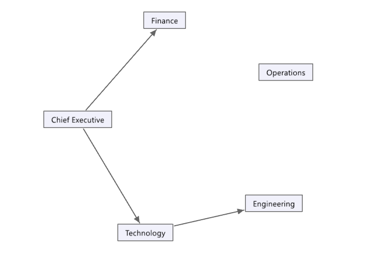
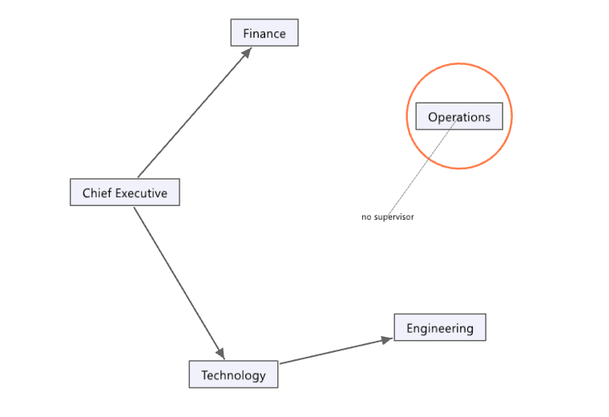
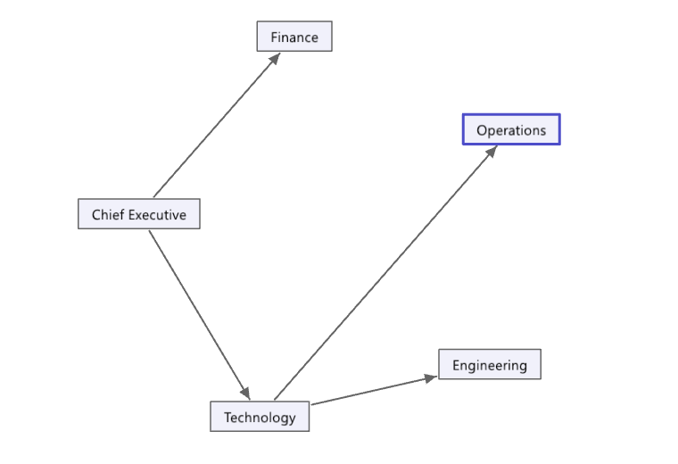

acme

1Five positions, and the lines that say who answers to whom.

2The org rules read the chart and find one thing: position 'ops' has no supervisor -- a broken reporting line

3One line added, and the same rules find nothing about it: nothing is found against ops
3 frames, 2 numbers, none of them typed. Every frame passed the picture gate, and every number shown is the number its fact reported.